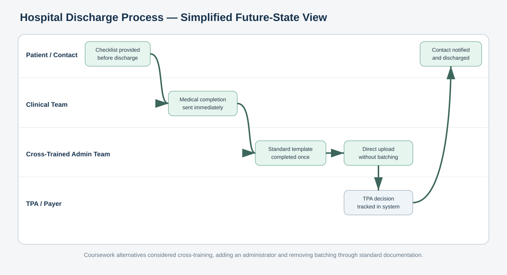
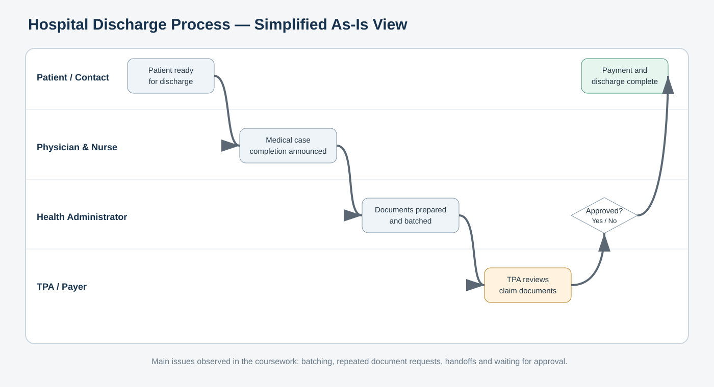

Coursework scenario
The original Bizagi files map a hospital discharge process involving the patient’s designated person, physician, assistance nurse, health administrators and a third-party payer.
As-is observations
- Separate GIPSA and non-GIPSA routes.
- Batching of discharge documents.
- Repeated requests for additional documents.
- Multiple handoffs and waiting for payer approval.

Alternatives reviewed
- Cross-train existing health-administration staff.
- Add a third health administrator.
- Remove batching and standardize documentation.
Simplified future state
The portfolio visual combines the strongest ideas into a straightforward future-state flow: earlier document checks, a standard template, direct upload and visible approval tracking.
Attribution: The raw Bizagi metadata names Tanvi as the author. For accuracy, this portfolio labels the work as academic team coursework rather than claiming sole authorship.